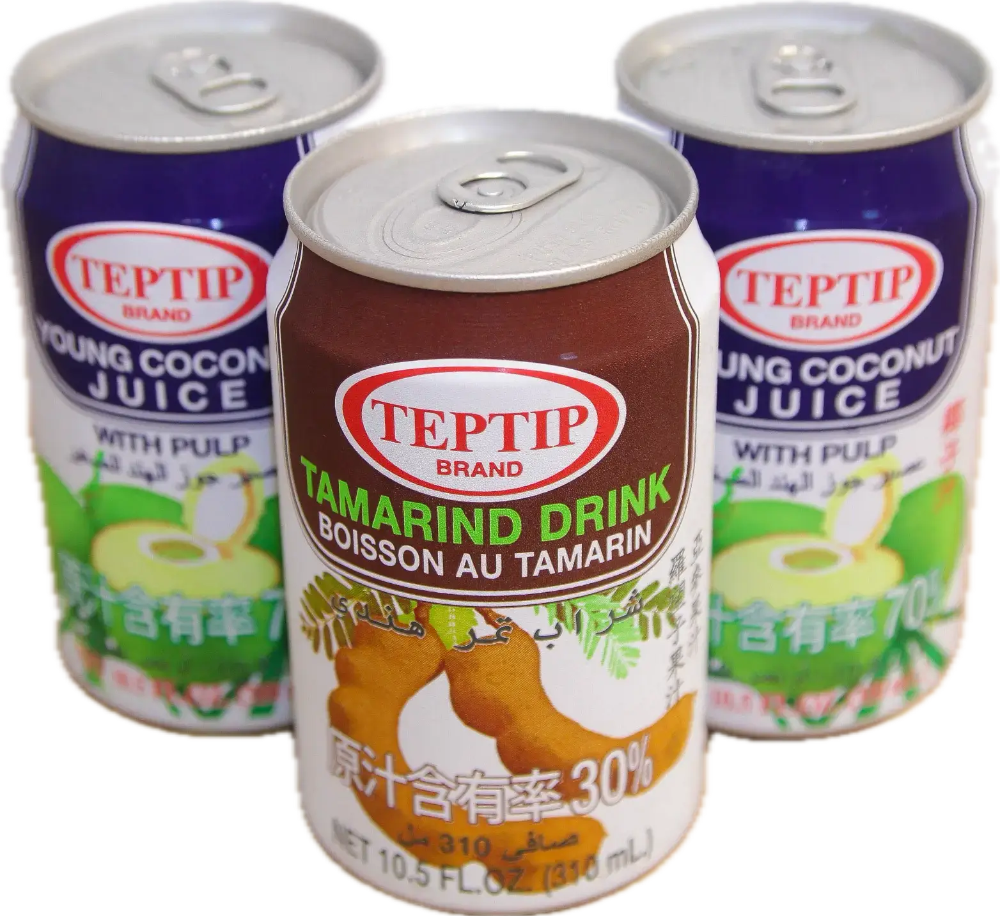

Rice & Noodle
Spice levels customizable:
None:

Mild:

Medium:

Hot:

We can adjust texture for elderly or those with chewing difficulties.
※If you have any food allergies,please inform our staff.
※Some dishes come with fixed protein and cannot
be substituted.( )
)

Pad Krapow Pork over Rice

Rice& Noodle
Spice levels customizable:
None:

Mild:

Medium:

Hot:

We can adjust texture for elderly or those with chewing difficulties.
※If you have any food allergies,please inform our staff.
※Some dishes come with fixed protein and cannot
be substituted.( )
)
 Noodle Choice:
Flat rice Noodles(Sen Yai)
/ Rice Noodle(Sen Lek)
/ Rice Vermicelli(Sen Mee)
Noodle Choice:
Flat rice Noodles(Sen Yai)
/ Rice Noodle(Sen Lek)
/ Rice Vermicelli(Sen Mee)
 Tom Yom seafood soup noddle
Tom Yom seafood soup noddle

Vegetable Delights
Spice levels customizable:
None:

Mild:

Medium:

Hot:

We can adjust texture for elderly or those with chewing difficulties.
Wok-tossed with Shrimp Paste
※If you have any food allergies,please inform our staff.

Som Tam

Juices & Drinks
Freshly Squeezed Goodness in Every Sip.
Imported from Thailand ─
Local Favorite Drinks
Coconut Juice ─
Sourced from Thailand’s fragrant Nam Hom coconuts;
naturally sweet, electrolytic, and
refreshing.
Tamarind Juice (Nam Makham) ─
Thailand’s beloved tangy-sweet juice,
full of flavor and health benefits.